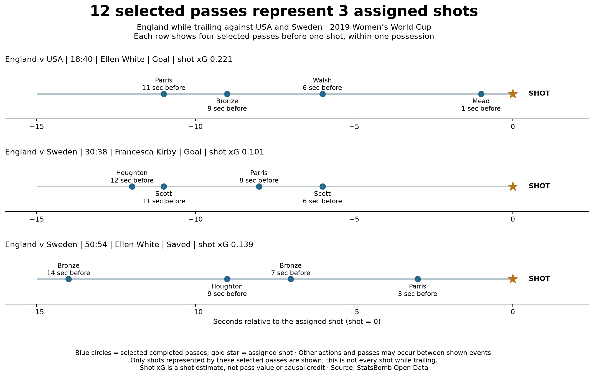

Football analyst training · Project lesson 24
What exactly does “12 passes” count?
We found 12 qualifying passes while England were trailing against USA and Sweden. Now inspect the shots those pass records refer to.
1. Several passes can precede one shot
Before Ellen White's 18:40 shot against USA, the selected passes were made by Parris, Bronze, Walsh and Mead. That gives four pass records linked to one shot. The timeline lists passers; it does not prove that each passed directly to the next named player.

“Passes” measures recorded passing actions. “Shots” measures attempts. “Possessions” groups actions into recorded possession sequences. These totals answer different questions. A possession can contain multiple shots, even though these three represented shots have separate possessions.
2. Read one row of the timeline
Blue dots are selected completed passes. The gold star is the assigned shot. A dot at −11 means that pass happened 11 nominal seconds before the shot. Other events may occur between the dots. These rows cover the represented shots only, not all shots while England trailed.
3. Count identities in Python
Open 24_passes_shots_and_possessions.py in Spyder. Each pass has its own id, but four records share the same shot_id. group_assigned_shots groups those records by (match_id, shot_id). The number of pass rows is 12; the number of groups is 3.
Why this matters when adding xG
The USA shot has xG about 0.221. Its four preceding pass records all carry that same shot value. Adding 0.221 four times would count the same shot repeatedly. Count each represented shot once: the three shot values total about 0.461. The duplicated pass-row sum would be about 1.842. We store that incorrect sum only to demonstrate the error; neither number assigns causal value to passes or individual passers.
4. Your analyst task
Correct this sentence for a coach: “England created 12 separate chances from these passes while trailing.” Explain which quantities the evidence actually supports, then name one thing the timeline omits.
Check your wording
“The 12 selected passing actions were linked to three represented shots in three possessions. Other actions and shots without an eligible selected pass are omitted.” A statement about involvement must not silently become a count of separate chances or a claim that each pass caused the shot.
Ask your teacher to review your correction or explain any line of the grouping code. The implementation was prepared with assistance; independent explanation is the next learning milestone.
Previous: within-match comparisons · Counting-unit reference · Full report